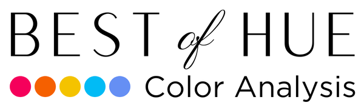

For Personal
For Personal For Business
For BusinessAs a small business owner with ADHD, I was constantly feeling overwhelmed and struggling to keep up with an endless to-do list and client communications. Archie has helped me streamline everything with such ease, keeping me on track and helping me get more organized both professionally and personally. It’s freed up so much time, energy, and mental clutter. What used to take me 2-3 hours a day is now done in minutes and more effectively.
Jett and Jack visually walked me through the initial set-up, although it was quite intuitive. Their instructions were clear and they were responsive and supportive every step of the way.
With Archie, everything lives in one place, which I love. Other AI tools feel scattered in comparison, but Archie feels like having my own command center! I can handle my client work, job tasks, learning, habit tracking, creative projects, and personal to-do’s with so much more ease, confidence, and efficiency.
It feels like a huge weight’s been lifted and I’m excited to dive further into Archie and uplevel my life and business!
Jehan Ramadan, Best of Hue Color Analysis
